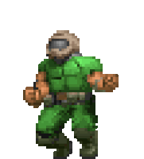

(this image does not reflect actual kills, secrets, and items, There would be over 5+ different victory screens that mean absolutely nothing, sorry.)
THANK YOU FOR PLAYING! Did you find all the secrets?
Click on the "DOOM II" Logo to return to the beginning.
